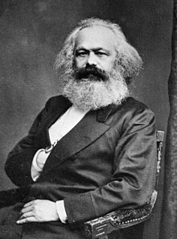

Karl Marx (German: [maʁks]; 5 May 1818 – 14 March 1883) was a German-born philosopher, political theorist, economist, historian, sociologist, journalist, and revolutionary socialist. His best-known works are the 1848 pamphlet The Communist Manifesto (with Friedrich Engels) and his three-volume Das Kapital (1867–1894); the latter employs his critical approach of historical materialism in an analysis of capitalism, in the culmination of his intellectual endeavours. Marx's ideas and their subsequent development, collectively known as Marxism, have had enormous influence on modern intellectual, economic and political history. Born in Trier in the Kingdom of Prussia, Marx studied at the universities of Bonn, Berlin, and Jena, and received a doctorate in philosophy from the latter in 1841. A Young Hegelian, he was influenced by the philosophy of Georg Wilhelm Friedrich Hegel, and both critiqued and developed Hegel's ideas in works such as The German Ideology (written 1846) and the Grundrisse (written 1857–1858). While in Paris in 1844, Marx wrote his Economic and Philosophic Manuscripts and met Engels, who became his closest friend and collaborator. After moving to Brussels in 1845, they were active in the Communist League, and in 1848 wrote The Communist Manifesto, which expresses Marx's ideas and lays out a programme for revolution. Marx was expelled from Belgium and Germany, and in 1849 moved to London, where he wrote The Eighteenth Brumaire of Louis Bonaparte (1852) and Das Kapital. From 1864, Marx was involved in the International Workingmen's Association (First International), in which he fought the influence of anarchists led by Mikhail Bakunin. In his Critique of the Gotha Programme (1875), Marx wrote on revolution, the state and the transition to communism. He died stateless in 1883 and was buried in Highgate Cemetery. Marx's critiques of history, society and political economy hold that human societies develop through class conflict. In the capitalist mode of production, this manifests itself in the conflict between the ruling classes (known as the bourgeoisie) that control the means of production and the working classes (known as the proletariat) that enable these means by selling their labour power in return for wages. [4] Employing his historical materialist approach, Marx predicted that capitalism produced internal tensions like previous socioeconomic systems and that these tensions would lead to its self-destruction and replacement by a new system known as the socialist mode of production. For Marx, class antagonisms under capitalism—owing in part to its instability and crisis-prone nature—would eventuate the working class's development of class consciousness, leading to their conquest of political power and eventually the establishment of a classless, communist society constituted by a free association of producers. [5] Marx actively pressed for its implementation, arguing that the working class should carry out organised proletarian revolutionary action to topple capitalism and bring about socio-economic emancipation. [6] Marx has been described as one of the most influential figures of the modern era, and his work has been both lauded and criticised. [7] Marxism has exerted major influence on socialist thought and political movements, and during the 20th century revolutionary governments identifying as Marxist took power in many countries and established socialist states including the Soviet Union and the People's Republic of China. Theoretical variants such as Leninism, Marxism–Leninism, Trotskyism, and Maoism have been developed. Marx's work in economics has had a strong influence on modern heterodox theories of labour and capital,[8][9][10] and he is often cited as one of the principal architects of modern social science.[11][12]
